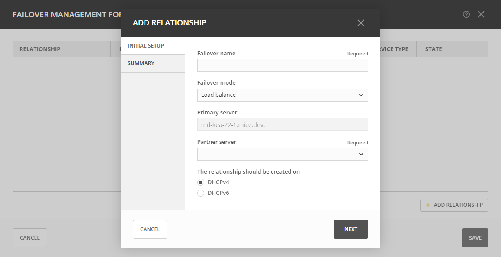

Managing Failover Relationships for Kea DHCP Services
Kea DHCP Failover maintains redundancy between two DHCP servers, enabling seamless service takeover in case of unavailability, and minimizing downtime and disruption to network operations. Failover relationships for Kea DHCP servers in Micetro are exclusively managed at the server level. When two Kea DHCP servers are in a failover relationship, Micetro ensures the identical replication of DHCP-related data from the primary to the secondary server. The synchronization process continues, copying changes from the primary to the secondary server until the failover relationship is deleted. This means that all scopes, pools, reservations, etc., are meticulously mirrored between the two servers, all under the exclusive management of Micetro.
Key aspects include:
Failover Relationships: Establish, create, and remove failover relationships - one per service type - forming a redundant and synchronized configuration. These relationships are crucial for maintaining a synchronized state between DHCP servers. This feature is particularly beneficial in ensuring high availability and fault tolerance for DHCP services.
Server-Level Management: Failover relationships are managed at the server level, seamlessly integrating with Micetro. The Micetro failover management is built on top of the High Availability feature of Kea DHCP Servers.
Integration with Micetro: Streamlined DHCP service management across the network, offering a comprehensive approach to failover relationships and scopes.
Kea DHCP High Availability
Warning
Synchronized clocks are essential for the reliable operation of the High Availability setup. If a clock skew is not corrected and exceeds 60 seconds, the High Availability service on each server will be terminated.
High Availability Hooks Library
The High Availability hooks library must be present on the file system before the Kea DHCP servers can be managed in High Availability mode.
Tip
For RedHat-like systems (such as RHEL, CentOS, SUSE, Fedora), the hook library is typically located at
/usr/lib/x86_64-linux-gnu/kea/hooks/libdhcp_ha.so.For Debian-based systems (such as Ubuntu, Linux Mint, Raspbian), the hook library is usually located at
/usr/lib64/kea/hooks/libdhcp_ha.so.You can customize the library’s location by specifying the path using the
keaHooksLocationin the preference file for the DHCP agent.
Two modes of failover operation are supported:
- Load Balancing
Designate one server as primary and another as secondary.
During normal operation, they are identical.
Upon simultaneous startup and lease database synchronization, the primary server always synchronizes first. The secondary waits for the primary to complete before starting its own synchronization.
- Hot Standby
Designate one server as primary and another as secondary.
Only the primary server responds to DHCP requests during normal operation.
The secondary (or standby) receives lease updates from the primary over the control channel.
When the secondary server perceives the primary as offline, it begins responding to DHCP queries.
Ports and Networking
To ensure a seamless Kea High Availability setup, Micetro requires effective communication with each Kea DHCP server through specific ports. This communication is vital for both Micetro’s interaction with the servers and cross-communication between Kea DHCP servers via the Kea Control Agent.
The Kea Control Agent defaults to port 8000. You can manually define this port in the configuration file, typically located at /etc/kea/kea-ctrl-agent.conf. It is imperative to keep this port open and accessible on every server hosting a Kea DHCP service and a Kea Control Agent.
Note
If the Configuration Backend section is set and configured, Micetro assumes a shared configuration among all members and will not replicate changes between servers.
Below is a snippet from the hook-libraries section, showing how Micetro can successfully detect a failover relationship:
"hooks-libraries": [{
"library": "/usr/lib/kea/hooks/libdhcp_ha.so",
"parameters": {
"high-availability": [{
"this-server-name": "server1",
"mode": "load-balancing",
"heartbeat-delay": 1000,
"max-response-delay": 10000,
"max-ack-delay": 5000,
"max-unacked-clients": 0,
"peers": [{
"name": "server1",
"url": "http://192.168.56.33:8000/",
"role": "primary",
"auto-failover": true
}, {
"name": "server2",
"url": "http://192.168.56.66:8000/",
"role": "secondary",
"auto-failover": true
}, {
"name": "server3",
"url": "http://192.168.56.99:8000/",
"role": "backup",
"auto-failover": false
}]
}]
}
this-server-name(Server Tag): This field must reflect the Kea DHCP server where the configuration file resides.This setting is also available via under the name Server tag. See kea-dhcp-server-properties.
max-response-delay: This value should be greater than theheartbeat-delayduration and is typically set higher than the combined duration of multipleheartbeat-delayvalues.In the event of communication interruption, the server may transition to the
partner-downstate (whenmax-unacked-clientsis 0) or initiate the failure-detection procedure. Settingmax-unacked-clientsto 0 ensures vigilant Kea servers that promptly change states upon connection loss. To allow some flexibility, consider settingmax-unacked-clientsto a positive number, for example, 5.The default value for
max-response-delayis 60000 ms.Warning
Configuring
max-response-delayincorrectly may result in servers being unable to consistently and efficiently detect downtime between each other. This can compromise Micetro’s ability to ensure accurate replication and proper operation of the servers.
Configuring the DHCP Agent
The preferences.cfg file can be used to fine-tune the Kea High Availability setup within the DHCP agent.
keaReplicateConfig: If set to 0, Micetro will not replicate between Kea DHCP servers in a High Availability setup. The default value is 1. Example:<keaReplicateConfig value=”0”/>keaControlAgentHost: Specifies the host to use when connecting to a control agent. The default value is127.0.0.1if the Kea Control Agent is running on the same machine, or it is the IP address of the server added to Micetro.keaControlAgentPort: Defines the port to use when connecting to the Kea Control Agent. The default value is8000.
Adding a High Availability-enabled Kea DHCP Server to Micetro
If the Kea high availability environment is set up correctly, you can add the primary Kea DHCP server to Micetro, much like any other DHCP server.
Important
If the DHCP agent is running on a machine other than the primary Kea DHCP server, a proxy must be defined in the Add DHCP server window in Micetro. In the window, enter the IP address or FQDN of the machine running the DHCP agent.
Fallback Behavior and Indicators
After the primary Kea server has been added to Micetro, it assumes the primary role in communication with the High Availability cluster. All changes are written to this server, serving as the single source of truth for the configuration, with replication handled accordingly.
Normal Operation
When both the primary Kea server and its secondary/backup partners are running and accessible, Micetro reports the Kea DHCP server status as OK.
Primary Server Offline
If the primary server is offline or unreachable from Micetro, the secondary/standby server takes over. Micetro reports the Kea DHCP service as Impaired during this period. The single source of truth becomes the in-memory config on the secondary/standby server until reconnection to the primary server is established.
Secondary/Standby/Backup Server Offline
If any of the secondary/standby/backup servers are offline, replication continues, but Micetro reports the Kea DHCP service as Impaired. When the affected server reactivates, automatic synchronization with the single source of truth occurs. (The in-memory config of the primary Kea server.)
Both Primary and Secondary/Standby Server Offline
If both primary and secondary/standby servers go offline, Micetro reports the Kea DHCP service as Service down. All operations result in errors, and replication is stopped until either the primary or the secondary/standby servers become active. The first active server becomes the single source of truth, with the primary overwriting any secondary/backup when it becomes active.
DHCP Agent Offline
In the unlikely event of the DHCP agent going offline, Kea High Availability information is momentarily lost. Upon the agent’s reconnection, Central attempts to reconnect to the preconfigured primary Kea DHCP server. After reconnecting, the configuration is parsed, the High Availability setup is detected, and replication between servers resumes.
Note
If the DHCP agent goes down while using the secondary/backup Kea server (due to primary downtime), the system will not be able to reconnect successfully. The primary Kea server must be reestablished to a working state before the system can reconnect.
If the DHCP agent goes offline while the primary Kea server is down, reconnection is only possible when the primary Kea server becomes active again.
Making External Changes to Kea Servers in High Availability
Note
Any modifications made to the configuration file through Micetro are instantly and automatically propagated to secondary/backup servers in a Kea DHCP High Availability setup. For immediate synchronization between Micetro and Kea DHCP servers, it is highly recommended to exclusively edit the configuration file through Micetro.
- Primary Server
Similar to the stand-alone server, Micetro synchronizes external changes on the primary Kea server according to a predefined schedule. Automatic propagation of changes to secondary/backup servers occurs only when the servers transition out of an active state and then become active again. To manually propagate the changes, you must make a change (any change) to the configuration through a Micetro feature, triggering a synchronization process.
- Secondary Server(s)
The same rules apply to managing changes in the configuration and the
config-reloadcommand on secondary servers. However, Micetro will prioritize the current in-memory configuration of the primary Kea DHCP server in the high availability setup, overwriting any external changes.
Viewing Kea DHCP Failover Relationships
You can view existing Kea DHCP failover relationships at the server level. Micetro automatically detects and syncs all existing failover relationships.
You can retrieve failover relationships through the API using the GetDHCPFailoverRelationship.
To view failover relationships in Micetro:
On the Admin page, select Service Management in the upper-left corner.
In the left sidebar, under DHCP Services, select Kea.
Select the server you want to view, and then select Failover management either on the Action or the Row … menu.
The Failover Management window will show all relationships associated with the selected server.
{kind=link}
The right pane shows failover information for the selected Kea DHCP server.
{kind=link}
Creating Failover Relationships for Kea DHCP
Each Kea DHCP server supports the creation of one Kea DHCPv4 and one Kea DHCPv6 failover relationship.
If a Kea DHCP server functions as a secondary server in a failover relationship, creating additional relationships with it as a primary server is not possible.
Micetro currently supports two failover server types in a relationship: one primary and one secondary. Therefore, creating failover relationships with backup servers is not supported.
To create a failover relationship through the API:
API supports creation using AddDHCPFailoverRelationship.
The following parameters are used for the AddDHCPFailoverRelationship command:
Name: The name of the DHCP failover relationship to be created.
PrimaryServer: The name of the primary DHCP server as it appears in Micetro.
SecondaryServer: The name of the secondary DHCP server as it appears in Micetro.
FailoverMode: The DHCP failover mode to use.
ServiceType: DHCPv4 or DHCPv6, defaults to DHCPv4.
To create a failover relationship in Micetro:
On the Admin page, select Service Management in the upper-left corner.
In the left sidebar, under DHCP Services, select Kea.
Select the Kea DHCP server housing the scope for which you want to establish failover configuration, and then select Failover management either on the Action or the Row … menu.
Select Add Relationship in the lower left corner, and complete the Add Relationship dialog box:
Failover name: Specify the name of the failover peer.
Failover mode: Select the DHCP failover mode to use.
Partner server: Select the partner server for the failover configuration.
Specify the DHCP version by choosing between DHCPv4 and DHCPv6; the default setting is DHCPv4.
After confirming the details on the Summary tab, click Add.
{kind=link}
Note
Enable failover by having two hook libraries exist on the filesystem: libdhcp_lease_cmds.so and libdhcp_ha.so. The latter implements the HA feature, and the former enables control commands necessary for HA to manage leases on remote servers.
Micetro searches for hooks in the default location (/usr/local/lib/kea/hooks/). If the hooks are elsewhere, you must specify the correct location using the keaHooksLocation preference value for the DHCP agent.
Modifying Failover Relationships
It is not possible to modify Kea failover relationships. They must be removed and re-added if any changes are to be made.
Removing Failover Relationships
To remove failover relationships, do one of the following:
Go to the Service Management tab on the Admin page, select the server containing the relationship you want to modify, and then select Failover management either on the Action or the Row … menu.
Select the relevant relationship, and then select Remove on the Row … menu.
Decide whether to delete or disable the secondary scopes.
-OR-
The API offers
RemoveDHCPFailoverRelationships. Just specify a reference to the Kea DHCP service, the name of the failover relationship, and the proper deconfigure action.